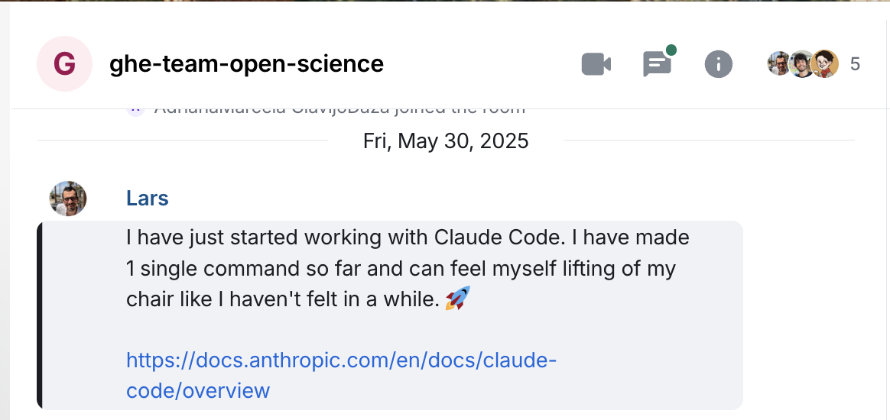
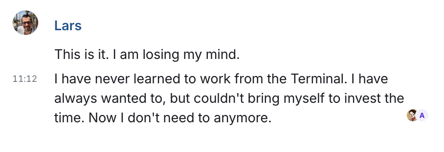
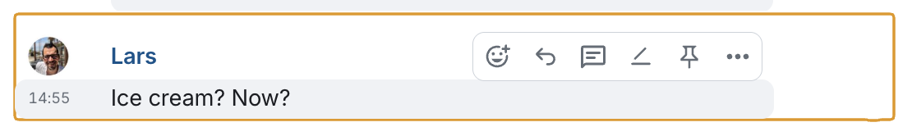
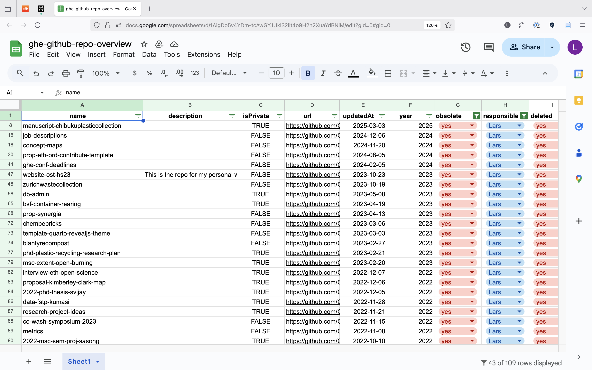
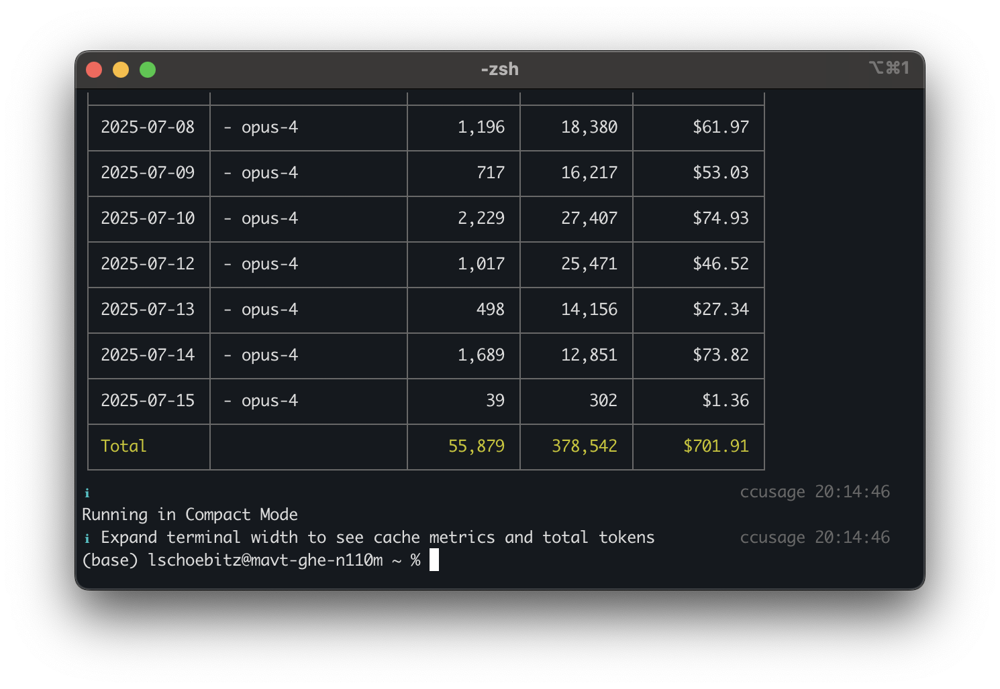

Why Claude Code
AI-Assisted Creation for GHE
Global Health Engineering, ETH Zurich
July 16, 2025
Warm-up
Activity: 1:1 Check-in
Time: 20 minutes total
- 10 minutes: 1:1 discussion with your partner (3 to 4 minutes each)
- 10 minutes: Share back (1 to 2 minutes per team)
Instructions:
- I will pair up by counting
- Discuss the following questions:
- How has it felt for you so far to use AI tools in your work?
- What are your expectations for today?
- What are you most excited about?
- What are you most nervous about?
- Each pair will share one or two key insights with the group
AI journey for me
- Perplexity web app has replaced my search engine
- Used GitHub Copilot for auto-completing suggestions for code and text in RStudio
- Copy/paste code to Perplexity to help with errors
- Found working with code and those tools not very satisfying
And then…
I built a synthetic data generator last year…Over the last week I rewrote it as a way of exploring some new tools:
The command-line interface to Claude. I’m disgusted by the amorality of the AI industry, but am now convinced that the coding tools are here to stay: writing tests and refactoring code with Claude’s help was much faster than doing it by hand.
— Greg Wilson
Greg Wilson’s Blog, 2025-03-29, Tooling for Snailz
2025-05-30 - 10:56 am
Claude Discovery Screenshot - First encounter with Claude Code
2025-05-30 - 11:12 am
Claude Mind-blown Screenshot - Realizing the potential
2025-05-30 - 14:55 am
Claude Ice Cream Screenshot - The reward moment
First commands
The following Monday, I would start teaching the class for University of Colorado, Boulder. I hadn’t prepared a single thing yet.
I forked the repository from two years ago for a new website and then…
First commands
> replace filename tbl-02-cven5837-ss23-learning-objectives.csv
with tbl-02-learning-objectives.csv in all files
> remove all <script defer
data-domain="cven5837-ss23.github.io/website"
src="https://plausible.io/js/plausible.js"></script>
> Add variables to _variables.yml for homework due dates.
Make it the Friday of the same week as found and replace
the text in weeks material with dynamic variables.
> Update the link to slides.scss for all slidesUse case - GitHub
Claude integrates with GitHub. Tell it to > commit and push to GitHub and it will guide you through the process of authorization. After that, you interact with GitHub using commands:
Use case - GHE GitHub
Hey Lars, your GitHub Organization really needs to be tidied. There are a lot of empty repos. It doesn’t look good to an outsider. - Fiona at the retreat
Hi both! I’m currently going through the GitHub repos and Jakub Tkaczuk reminded me that we wanted to clean them up a few months ago and then never did as we didn’t switch to GitLab. - Colin on Element
Use case - GHE GitHub
Google Sheet with list of GitHub repos to delete
Use case - GHE GitHub
> Work on GitHub organization Global-Health-Engineering.
Delete the following repos:
[copy & paste list from Google Sheet]…30s later
DONE
ccusage
ccusage - Claude Code usage tracking tool
That’s why we pay 100 USD a month instead of using token credits.
https://github.com/ryoppippi/ccusage
My AI Skeptic Friends Are All Nuts
If you’re making requests on a ChatGPT page and then pasting the resulting (broken) code into your editor, you’re not doing what the AI boosters are doing. No wonder you’re talking past each other.
“but you have no idea what the code is”
Are you a vibe coding Youtuber? Can you not read code? If so: astute point. Otherwise: what the fuck is wrong with you?
My AI Skeptic Friends Are All Nuts - Reddit
Everyone on the team now has a skewed sense of what’s normal. People expect things to move faster. They assume every task can be outsourced, every feature should be cheap, and that “we’ll just have AI help with it” is a valid estimate.
And when you rely on “AI” too heavily, you don’t just lose time - you lose context. Your own personal context. The deep, slow brain work that happens when you explore a codebase, struggle with naming, try five things that don’t work before you find one that does.
Source: Reddit Discussion
Workflow (for today)
Workflow - Get started
- Think of a name for your project
- naming convention: all small letters, use dashes between words (unless it’s an R package), max three words
- Create a new repository in: github.com/openwashdata-conf
- Clone the repository to your
gitreposfolder - Open your Terminal on the project folder or navigate to it in your Terminal
- In parallel, open the project folder in your preferred IDE (e.g., RStudio, VSCode)
Workflow - Start Claude
- In the Terminal has its working directory on the project folder, type
claudeand press Enter - Claude will start in the Terminal, and you can interact with it
- Every time, after Claude has created something, you use the command
> commit & pushto save your work
- the first time you use this command, Claude will ask you to authorize access to your GitHub account
Workflow - Provide context
- Add files to your folder that are relevant for your project or could help Claude learn about your context:
data.csvdownloaded from the web or exported from a Google Sheet on our Drivereport.pdfPDFs you want to work withbibliograph.bibfile for your references*.docx, *.xlsx, *.pptxetc. (Claude converts everything to.md) files that you want to use as context- any other files that are relevant for your project
- Use your IDE to create a new file inside your folder and name it:
initial-prompt.md - In
initial-prompt.md, write a detailed prompt for Claude to start with. Include links to websites and tell Claude what you need from them. Add YouTube Video links (Claude can also transcribe them).
Workflow - Start creating
Workflow - Accept permission
Claude will ask for permission when accessing files:
Always allow
- Speeds up workflow
- Often my default choice
- Hard to know trusted operations
Allow once
- Good for testing
- A more cautious approach
Deny
- Stop the operation
- Reconsider approach
Workflow - CLAUDE.md
- After working some time, create the CLAUDE.md using the slash command
/init - Review it. Add things. Adapt things.
Workflow - Review & Refine
- Review Claude’s work in your IDE (use the diff tool to see changes)
- Edit files yourself as needed
- Run Claude again for improvements
- Run through a file, add
TODO:comments for Claude to address and then tell Claude to:
Workflow - README.md
If you:
- have had enough of that project (any time from minutes to hours) and you want to do something else
- think it’s “finished” and you want to do something else
- don’t even like it
Tips
Tips - Slash commands
Creates a CLAUDE.md file in your project folder
- Add context: Include anything Claude should know about your project
- Keep it updated: Evolve the file as your project grows
- Use templates: Find examples for your specific type of work
- Quick additions: Use
# commentto add notes during your session
Tips - PLAN -> CREATE -> TEST -> DEPLOY
- Claude excels when it can plan first
- Ask to check-in with you, run the plan by you, or use “plan mode”
- Tell Claude to “think” “think harder” “ultrathink”
- Once you are happy with the plan, tell Claude to work on it, either bit by bit, or everything at once
Tips - Working Style
- Claude doesn’t get tired. Hit
Escif you don’t like what you see and want Claude to stop. Start over. - Tell Claude to revert to a previous commit if you don’t like the current state of your project. That’s why
> commit & pushis so important after every round of changes Claude has made.
Tips - Claude’s Tools
Claude can use these tools to help you:
File Operations - Read/Write/Edit files - Search with grep/glob - Navigate directories
Development - Run bash commands - Web search & fetch - GitHub integration
Claude will write code scripts (mostly in Python) and can install tools on your behalf.
Tips - Shift + Tab
Switch between:
- auto-accept edits on
- plan mode on
Tips - Organization
Or
Tips - Learning
- Try and experiment as much as you can.
- Keep some notes of your experiences
- Watch Videos on YouTube about Claude Code
Tips - Critical Thinking
- Be careful with “Study claims…” statements out there.
Study finds AI code assistants slow developer productivity by 19%
See also: Claus Wilke’s analysis
Tips - Trusted Sources
- But read newsletter or organizations and people you trust
Open‑source projects are increasingly cautious about accepting AI-generated code, while new fees on data scraping are pushing teams to reconsider how they build AI workflows. Here’s how your team can adapt, keeping velocity high without compromising security or compliance.
— GitPod Newsletter
Tips - AI Claims
AI companies love to tout that their models are approaching—or have reached—PhD-level intelligence. This is blatant nonsensical marketing geared towards an audience that deeply misunderstands what a PhD is and what it takes to get one. Hearing it makes me cringe. PhD-level intelligence is not a thing.
— Claus Wilke
Model Context Protcol (MCP clients/server)
This is levelling up by integrating other tools into Claude Code.
- Google Workspace
- Zotero
- Perplexity Search
- OpenStreetMap
- Asana
- 100s are being developed every day
My personal favourites so far: https://github.com/stars/larnsce/lists/mcps Awesome-List on GitHub: https://github.com/punkpeye/awesome-mcp-servers
Want to try Zotero integration?
If you’d like to connect Claude with your Zotero library to search papers, manage references, or extract annotations, let me know and I’ll help you set it up!
Just in (yesterday): Claude Directory
Claude Directory - A new way to discover and connect tools to Claude Chat Interface (haven’t learned yet how to do it for Claude Code)
What it is:
- Curated collection of MCP servers
- One-click installation
- No manual configuration needed
Benefits:
- Connect tools directly in Claude
- Verified and tested integrations
- Growing library of connections
Note
This simplifies the MCP setup process significantly - browse, click, and connect!
Recommended Videos
- Getting Started with Claude Code - Official Anthropic tutorial
- History and Concepts of Claude Code - Understanding the why behind Claude Code
- Advanced Claude Code Workflows - Power user tips and tricks
- Building Projects with Claude Code - Real-world project walkthrough